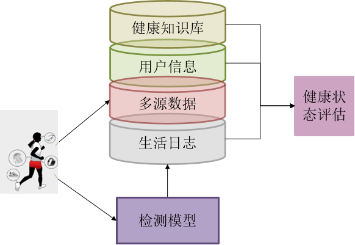
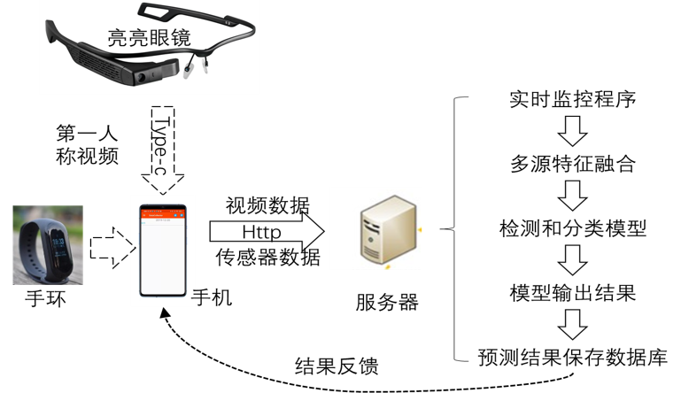
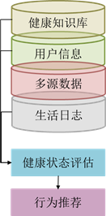

项目特色
多功能手机APP
设计友好的交互界面并支持长时间进行数据采集的手机APP，主要功能包含运动数据展示、生理信号采集和数据统计，能够对健康智能手环进行控制和数据采集等。
建立数据仓库
数据仓库旨在感知用户健康相关的数据，并对其进行高效的存储和安全的访问。
个体自适应健康事件流识别
以智能手机采集的底层传感器信号、通过可穿戴式设备采集的生理信号、以及通过社交媒体采集的社交行为信号为输入，以跑步、吃饭、锻炼等与健康相关的实时生活事件识别结果为输出。
基于事件流的健康状态评估
结合实时行为信息和疾病记录进行关联分析，从结构化的实时行为序列信息中发现疾病的动静态关联模式，根据疾病风险实时评估个体的生理健康状态。本内容以底层的多源异构行为数据和识别得到的健康事件流为输入，以实时生理健康状态指数为输出。


根据传感器信息识别活动
针对多源异构数据，通过多种传感器数据进行特征提取以及数据融合完成人体行为识别过程，并使用视频数据流对时间进行精准定位，将两者结果结合共同确认行为所发生的时间和持续时间。长期记录用户数据并构建用户生活日志。
- 通过可穿戴设备实时采集多源异构数据。
- 分别提取多源异构数据的特征。
- 挖掘数据中事件的时间边界，实现对事件起止时刻的精准定位。
- 识别数据中的事件。
- 根据长期的人类行为事件记录，构造生活日志。

根据健康信息推荐活动
将个性化干预看成是一个基于情境的个性化推荐问题。
通过协同分析个体静态信息、环境情境信息流、实时行为信息流和健康指数序列，寻找某种情境、个体静态信息和实时行为上下文组合下对健康指数影响最大的健康事件（如休息、听音乐、散步等）。
基于健康事件行为历史，推断个体偏好，对推荐结果进行筛选，提高所推荐健康事件被患者采纳的概率。